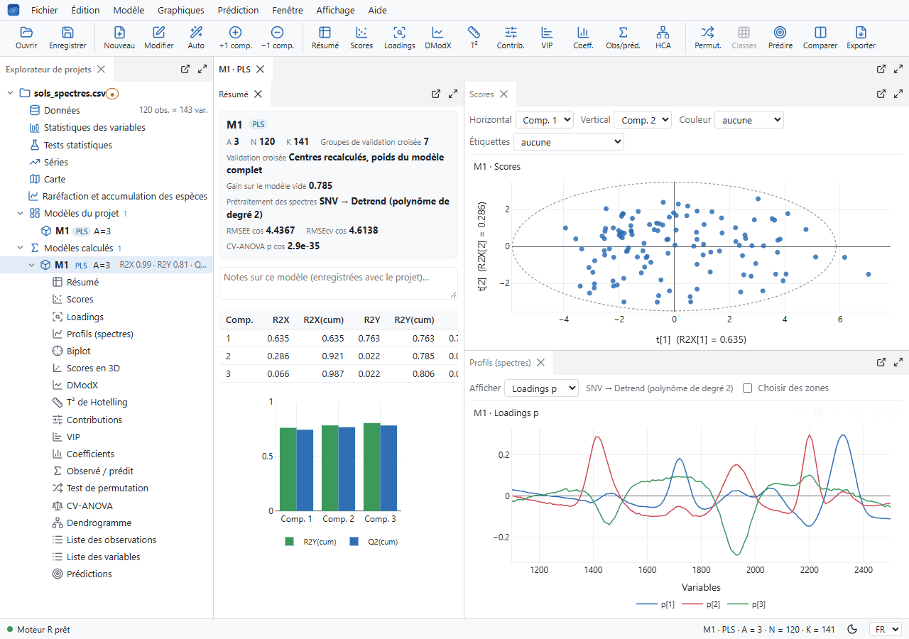
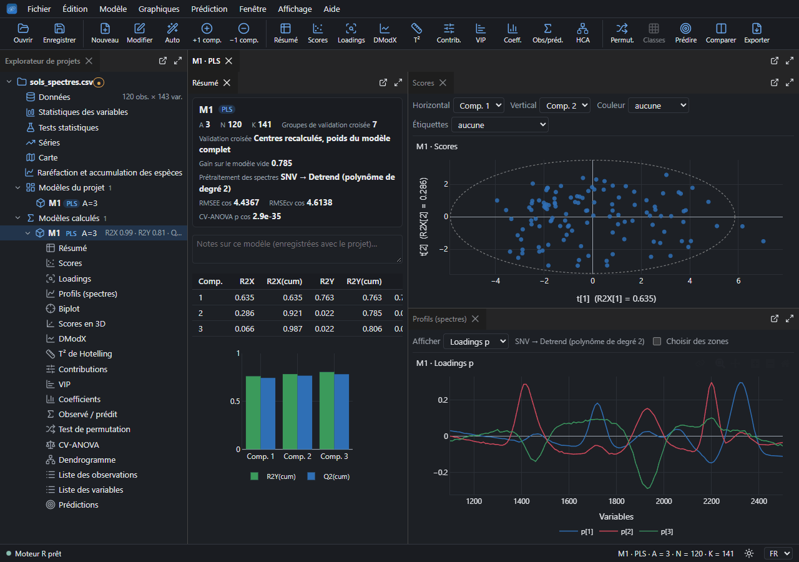

Nuée
ACP, PLS, écologie des communautés, modèles linéaires, généralisés et mixtes, suivis de populations et cartes, sous Windows, macOS et Linux, calculés en R.
Nuée (version 1.0.0) est une application de bureau pour analyser des données de terrain et de laboratoire. Ouvrez un tableau venant d'Excel, de R, de SPSS, de Stata, de SAS, de jamovi ou de QGIS, ou les relevés de terrain de KoboToolbox ou d'ODK, choisissez vos variables, et obtenez le modèle avec ses graphiques, ses diagnostics et sa validation. Les résultats repartent vers Excel, R, SPSS, Stata, SAS, jamovi ou QGIS, avec le paragraphe de votre section Méthodes, ou en script R qui refait le calcul sans Nuée.




Pour qui
Pour les écologues de terrain, les gestionnaires d'espaces naturels et les chercheurs en environnement, statisticiens ou non. Nuée vous aide à choisir :
- Quelle analyse ? (menu Modèle) pose votre question en mots simples : comparer des groupes, l'effet de variables, beaucoup d'espèces, une tendance, une densité, un avant/après avec témoins… Il propose la réponse et le dispositif d'après vos colonnes, conseille une analyse et ouvre la fenêtre du modèle déjà remplie.
- Le résumé de chaque régression dit ses conditions en mots : la normalité des résidus, une dispersion qui change, des observations influentes, une surdispersion, des termes colinéaires, avec ce qu'il faut faire.
- Le texte des méthodes et le texte des résultats sont écrits d'après le modèle, en français ou en anglais, avec leurs références.
Ce que fait Nuée
Multivarié
ACP, PLS, PLS-DA, OPLS, spectres proche infrarouge (SNV, MSC, dérivées), VIP, validation croisée, tests de permutation.
Régressions
Modèles linéaires, mixtes (nlme), GLM et GAM (mgcv) pour comptages, présences, proportions, avec autocorrélation dans le temps, moyennes ajustées et sélection par AIC.
Communautés
RDA, CA, CCA, PCoA, NMDS, PERMANOVA, test de Mantel, espèces indicatrices, raréfaction.
Suivis
Tendances de séries, avant/après avec témoins (BACI), indices de comptages (TRIM), densités par échantillonnage par distances.
Cartes
Coordonnées et systèmes (Lambert-93, UTM…), GeoPackage pour QGIS, valeurs de rasters, autocorrélation spatiale.
Publication
Figures composées à la taille d'une revue, rapports PDF et Word, documents avec citations, export vers R, R Markdown et Quarto.
Tout en R, sur votre ordinateur
Chaque calcul est écrit en R, commenté, dans le dossier de l'application : on peut lire ce qui a été calculé, et le modifier. La console R (Affichage › Console R) montre l'appel derrière chaque action. Les résultats sont ceux des paquets de référence (vegan, nlme, mgcv, emmeans, rtrim, Distance…), vérifiés à chaque changement.
Vos données restent sur votre ordinateur : Nuée n'envoie rien, sauf une question à GitHub au démarrage pour savoir s'il existe une nouvelle version (elle se coupe dans le menu Aide), et la zone affichée aux serveurs d'OpenStreetMap ou de l'IGN quand vous choisissez un fond de carte.
Télécharger
Nuée 1.0.0 :
- Windows 10 et 11 : Nuee-Setup-1.0.0.exe, R inclus ;
- macOS : Nuee-1.0.0-arm64.dmg pour Apple silicon (macOS 14 ou plus récent), Nuee-1.0.0-x64.dmg pour Intel (macOS 13 ou plus récent), R inclus ;
- Debian, Ubuntu et dérivées : Nuee-1.0.0-amd64.deb ;
- autres distributions Linux : Nuee-1.0.0-x86_64.AppImage ou Nuee-1.0.0-x64.tar.gz.
Comment installer : voir Installation. Toutes les versions et leurs notes : la page des publications sur GitHub ; ce qui a changé : Quoi de neuf.
Pour commencer
- Les tutoriels suivent six études du début à la fin : un avant/après avec témoins (BACI), une PLS sur des spectres, le suivi d'une population d'oiseaux, les carabes de trois milieux (écologie des communautés), les cartes et les modèles spatiaux, et le rapport d'une étude.
- Dans l'application, Aide › Projet d'exemple ouvre 120 pommes inventées avec quatre modèles prêts.
- Le guide d'utilisation décrit chaque fenêtre et chaque calcul.
Nuée est un logiciel libre (GPL-3.0). L'interface est en français et en anglais (Affichage › Langue). Un problème, une question : ouvrez un ticket sur GitHub, en français ou en anglais ; Aide › Informations de diagnostic donne les versions à y coller.